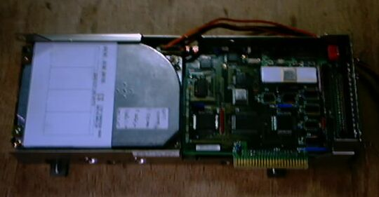
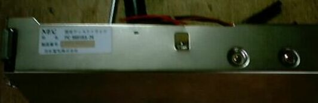
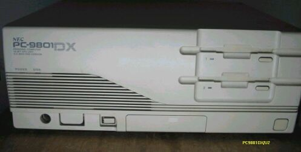

SACI HD について


上の写真はNEC製40MBSASIHD、左側の光っているHDらしいのが１．５インチハイトのドライブで、右側のロジックボードがSASIコントローラ、コネクタでマザーボードに差し込む。SCSIではこのコントローラが２枚になっており、マザーボードにも、コネクタが２列付いている。下の写真はその側面で、ピンぼけながらNECという文字が読める。
SASI(Shugart Asspciates System Interface)は、Shugart社が開発した、PC用の汎用機器（主にハードディスク）インターフェイスです。PC９８シリーズのハードディスクインターフェイスとして一時期盛んに利用されました。ハードディスクと、インターフェイス回路を組み合わせたパックとして、PC98に組み込むようになっていました。容量は２０MBか４０MBで、あまり大容量のものはありません。私のところでは、まだ生きているSASI HDが2台あり、9801RSに４０MB(型名PC9801RA-34)、9801DSに２０MBのものを組み込んでいます。SCSIと比べると、容量が小さく、アクセス速度も遅いのですが、なるべくオリジナルの部品を使っていたいので、壊れるまでは使用するつもりです。壊れた場合には、しかたがないので、HDパックのケースと電源のコネクタ（形状が特殊です）だけ使いSCSI HDを組み込んで、CバスにSCSIカードを入れてそこから逆に内部のHDに接続し、生かすことができます。この方法は、「PC98-パワーアップ道場」(小笠原陽介著、1998、SOFTBANK BOOKS)に詳しく紹介されています。
SASI HD その後
最近、内蔵HDの付いているPC9801RXを３００円で入手しました。目的はSASI HDにあったのですが、カバーをあけてみると、日本TEXAの80MB-SASIであることが分かりました。ドライブは東芝製で、消費電流12V-2A、5V-3Aと目を疑うような数字が書いてあります。とりあえずMSDOSを起動して、様子を見ようとしましたが、内蔵の５インチFDから立ち上げると、HDが見え、容量は40MBのようです。FORMATから見ると、HDが２台あるように見えます。どうやら80MBが40MBx2として認識されているようです。それぞれの40MBをフォーマットし直し、何時間か回しておきましたが、問題なく動作しています。
その過程で、5インチFDにメディアが挿入できなくなる、古いPC98でよくおきる故障が発生し、FDを２台とも分解し、ヘッドシールドの脱落しているのを取り除きました。
(2002/5/17記)
PC9801DXの仕様など

型 名 ：PC-9801DXmodelU2
価 格 ：488000
発表日 ：90/12
出荷日 ：90/12
CPUクロック ： V30 8MHz相当 80286(10/12MHz)
ROM ： BIOS及びN88-BASIC(86)96KB
標準RAM ： 640KB
最大ユーザーズメモリ ： 14.6MB
グラフィックVRAM容量 ： 256KB
グラフィックVRAM画素数： 640*400
グラフィックVRAM色数 ： 4096色中16色2画面
サウンドVRAM ： 16KB
テキストVRAM ： 12KB
拡張スロット数 ： 4
拡張スロット電源容量 + 5V ：0.8A
+12V ：0.06A
-12V ：0.07A
標準実装ドライブ FDD ：3.5インチ1M/640FDD*2
標準実装ドライブ HDD ：40MB
内蔵インタフェースコネクタ：1MFDDI/F SASII/F プリンタI/F
：RS-232CI/F マウスI/F デジタル.B/WI/F
：アナログCRTI/F
漢字 ：標準:第一、第二、拡張
サウンド機能 ：標準実装
カレンダ時計 ：μPD4900相当年サポートあり
ＶＣＣＩ適合 ：基準レベル0
使用条件 電圧 ：AC100V±10%
周波数：50/60
温度 ：10～35
湿度 ：20～80%(結露なし)
消費電力 標準 (W) ：80
最大 (W) ：130
エネルギー消費効率 (W) ：80
外形寸法 本 体 (mm) (W)：380 (D)：335 (H)：150
キーボード(mm) (W)：435 (D)：180 (H)：34
重量 本体 (Kg) ：9.7
(2002/12/27 追記)
PC9801のページに戻る